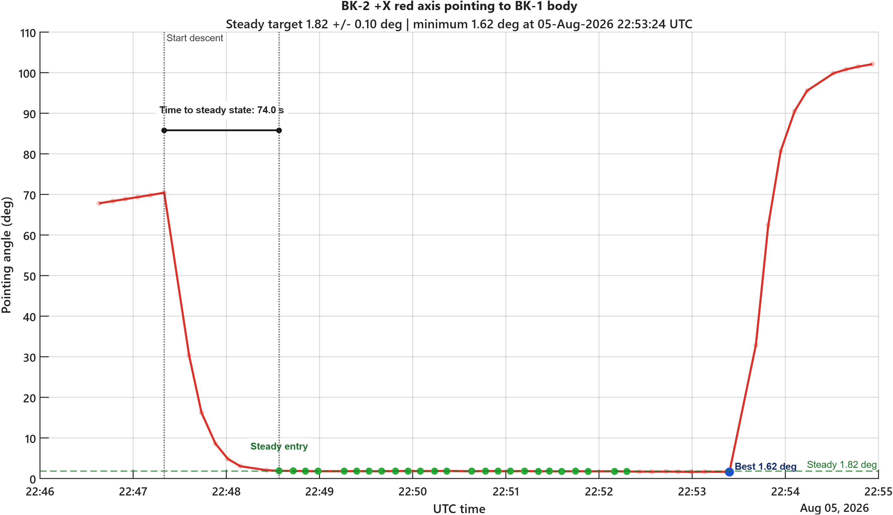

BK-2 to BK-1 Attitude Alignment
Judges whether the BK-2 body +X red axis points toward the BK-1 body. Edit the top block of all_simulate_editable.m to change TLE, ADCS columns, steady target, or output names.
Mission status
PASS
Time to steady state
74.0 s
Best pointing angle
1.62 deg
Near-steady samples
46%
Interactive viewer
MATLAB Earth Timeline
Open the script in normal MATLAB to use satelliteScenarioViewer with Earth, satellite models, play/pause, and a draggable time slider.
Mission Events
| Start descending | 05-Aug-2026 22:47:20 UTC / 70.42 deg |
|---|---|
| First steady entry | 05-Aug-2026 22:48:34 UTC / 1.89 deg |
| Angle drop to steady | 68.53 deg |
| Best pointing | 05-Aug-2026 22:53:24 UTC / 1.62 deg |
| Near-steady samples | 25 / 54 |
| Average range | 7775.5 km |
Pointing Angle Chart
